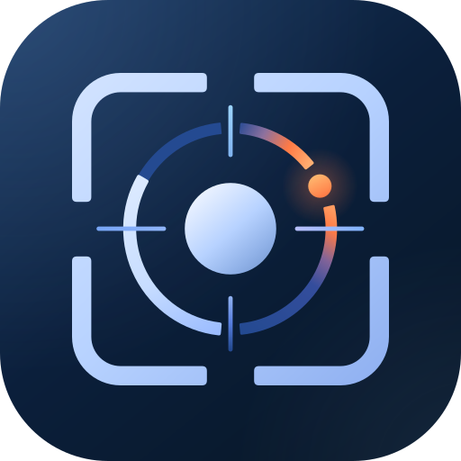
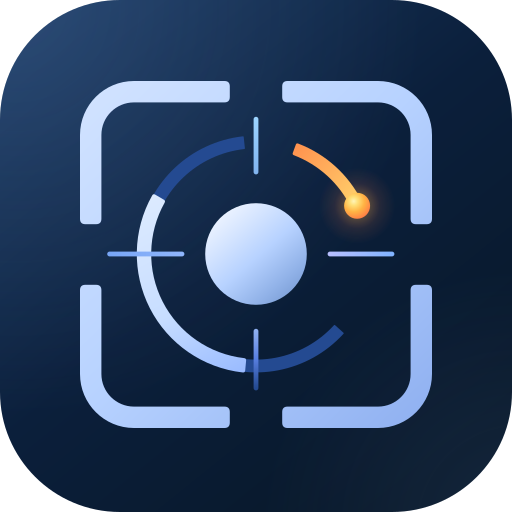

LUMINOUS LAB / SELECTED SHAPE
열린 궤도, 빛나는 신호.

상·하 개방 · 분리된 신호점


선명한 주황 호 → 밝은 신호점

오른쪽 눈금은 구체 쪽 간격을 유지하며 바깥 끝을 줄였습니다. 주황 호는 시작부터 선명한 주황색으로 독립시키고, 신호점을 향해 황금빛으로 밝아집니다. 프레임 5.35·궤도 3.1~3.6·눈금 두께 1.2·신호점 지름 6.5와 구체의 크기·색은 유지했습니다. 수치는 128 기준입니다.
실제 표시 크기 비교
64px48px32px24px
기존 기본형
채택 기본형